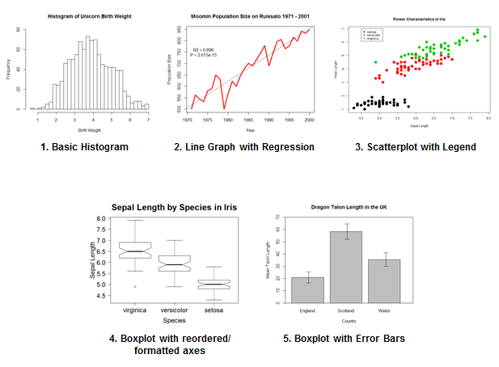

A Brief Introduction to R
Full Spectrum Crime Analysis Under One Hood
Bryan Britten
Financial Intelligence Analyst - New York County District Attorney's Office
Introductions
Who am I?
- Graduated from Johns Hopkins University with a master's degree in Economics, focusing on statistics and econometrics.
- Spent three years at a market research company learning computer programming and honing skills in data science.
- Currently work for the Manhattan District Attorney's Office in the Major Economic Crimes Bureau investigating money laundering and terrorist financing.
What is R?
- Completely free, open-source software that was designed by statisticians for statisticians.
- Over 6,142 packages (aka plugins) on the R website.
- Growing quickly in both academic and non-academic industries.
- Currently being used by companies such as Google, Facebook, Firefox, Microsoft, and Twitter.
Why Use R?

Before We Get Started
- I'm going to be moving quick. This is not a tutorial on how to get started on R, but is instead an introduction to the program and what it can do for crime/intelligence analysis.
- It's going to be a bit overwhelming, especially since the syntax won't look like what you're used to. R syntax is different from SQL, Visual Basic, and definitely from Excel. Don't let it deter you.
- With that being said, I want to admit up front that while R is free, it comes with a cost. There is a fairly steep learning curve in the beginning, but overcoming it is quick.
Loading and Querying Data
Loading Data into R
#Connect to an Access database:
library(RODBC)
con <- odbcConnect('path/to/your/access_database.db', uid='user_name', pwd='password')
#Connect to Excel database:
library(gdata)
dat <- read.xls('path/to/your/excel_database.xls', sheet=1,
na.strings=c('NA', '', '#DIV/0!'))
#Connect to a SQL database:
library(RSQLite)
con <- dbConnect(SQLite(), 'path/to/your/sql_database.db')
#Ideally, you'll be working with CSV and TXT files:
dat <- read.table('path/to/file.txt', header=T, sep='\t', stringsAsFactors=F)
#-or-
dat <- read.csv('path/to/file.csv', stringsAsFactors=F)
Querying Data - SQL
library(RSQLite)
con <- dbConnect(SQLite(), dbname='Crimes.db')
dbGetQuery(con, 'SELECT * FROM Crime LIMIT 3')
## ID CaseNumber Date Block
## 1 1391916 G106253 02/22/2001 12:01:00 AM 057XX S CARPENTER ST
## 2 8183052 HT417641 07/27/2011 05:15:00 AM 106XX S OGLESBY AVE
## 3 3704568 HK807015 12/13/2004 05:45:00 PM 001XX S STATE ST
## Crime Description LocDescription Arrest Beat
## 1 CRIMINAL TRESPASS TO VEHICLE STREET true 712
## 2 BATTERY DOMESTIC BATTERY SIMPLE APARTMENT true 434
## 3 THEFT RETAIL THEFT SMALL RETAIL STORE true 123
## District Ward Year Location
## 1 NA NA 2001 (41.789585525, -87.650967517)
## 2 4 10 2011 (41.702083163, -87.565281284)
## 3 1 42 2004 (41.879875934, -87.627575059)
dbListTables(con)
## [1] "Crime"
dbListFields(con, 'Crime')
## [1] "ID" "CaseNumber" "Date" "Block"
## [5] "Crime" "Description" "LocDescription" "Arrest"
## [9] "Beat" "District" "Ward" "Year"
## [13] "Location"
dbGetQuery(con, 'SELECT ID, Date, Block FROM Crime
WHERE Block LIKE "% Av%" LIMIT 3')
## ID Date Block
## 1 8183052 07/27/2011 05:15:00 AM 106XX S OGLESBY AVE
## 2 2765161 05/31/2003 02:00:00 AM 063XX S MENARD AVE
## 3 5546109 05/17/2007 12:24:00 PM 084XX S SAGINAW AVE
dbExistsTable(con, 'Totals')
## [1] FALSE
dbGetQuery(con, 'CREATE TABLE Totals AS SELECT DISTINCT
Date, count("Crime") as Total FROM Crime GROUP BY Date')
dbGetQuery(con, 'SELECT * FROM Totals LIMIT 5')
## Date Total
## 1 01/01/2001 01:00:00 AM 1
## 2 01/01/2001 01:07:50 PM 1
## 3 01/01/2001 02:00:00 AM 1
## 4 01/01/2001 02:21:38 PM 1
## 5 01/01/2001 02:34:00 AM 1
dbListTables(con)
## [1] "Crime" "Totals"
dbRemoveTable(con, 'Totals')
## [1] TRUE
dbListTables(con)
## [1] "Crime"
dbDisconnect(con)
## [1] TRUE
con <- dbConnect(SQLite(), dbname='Investigations.db')
dbGetQuery(con, 'SELECT * FROM Cases')
## Case Detective
## 1 1 John Doe
## 2 1 Bill Smith
## 3 1 Diane Hader
## 4 2 Alexis Random
## 5 2 Diane Hader
## 6 3 John Doe
## 7 4 Bill Smith
## 8 4 Diane Hader
## 9 4 Alexis Random
## 10 5 John Doe
## 11 5 Diane Hader
Question: What is the easiest way to get all of the detectives working a case
on the same line?
We'll revist this later.
Querying Data - Base R
dat <- read.csv('Chicago Crimes (subset).csv', stringsAsFactors=F)
head(dat, n=3)
## ID CaseNumber Date Block
## 1 1391916 G106253 02/22/2001 12:01:00 AM 057XX S CARPENTER ST
## 2 8183052 HT417641 07/27/2011 05:15:00 AM 106XX S OGLESBY AVE
## 3 3704568 HK807015 12/13/2004 05:45:00 PM 001XX S STATE ST
## Crime Description LocDescription Arrest Beat
## 1 CRIMINAL TRESPASS TO VEHICLE STREET true 712
## 2 BATTERY DOMESTIC BATTERY SIMPLE APARTMENT true 434
## 3 THEFT RETAIL THEFT SMALL RETAIL STORE true 123
## District Ward Year Location
## 1 NA NA 2001 (41.789585525, -87.650967517)
## 2 4 10 2011 (41.702083163, -87.565281284)
## 3 1 42 2004 (41.879875934, -87.627575059)
head(dat[grepl('.*Av.*', dat$Block, ignore.case=T), c('ID', 'Date', 'Block')], n=5)
## ID Date Block
## 2 8183052 07/27/2011 05:15:00 AM 106XX S OGLESBY AVE
## 4 2765161 05/31/2003 02:00:00 AM 063XX S MENARD AVE
## 5 5546109 05/17/2007 12:24:00 PM 084XX S SAGINAW AVE
## 6 1816315 10/26/2001 03:26:00 PM 090XX S COMMERCIAL AV
## 8 1814539 10/26/2001 03:30:00 PM 048XX N ASHLAND AV
d.1 <- aggregate(list(Count=dat$Crime), list(Date=dat$Date), length)
head(d.1, n=5)
## Date Count
## 1 01/01/2001 01:00:00 AM 1
## 2 01/01/2001 01:07:50 PM 1
## 3 01/01/2001 02:00:00 AM 1
## 4 01/01/2001 02:21:38 PM 1
## 5 01/01/2001 02:34:00 AM 1
d.1 <- dat[dat$Arrest == 'true', ]
d.1[1:5, c('ID', 'Date', 'Arrest')]
## ID Date Arrest
## 1 1391916 02/22/2001 12:01:00 AM true
## 2 8183052 07/27/2011 05:15:00 AM true
## 3 3704568 12/13/2004 05:45:00 PM true
## 9 9257262 08/10/2013 11:59:00 PM true
## 14 7871577 01/02/2011 10:30:00 PM true
d.1 <- dat[, c('Date', 'ID', 'Crime', 'Arrest')]
d.1[1:5, ]
## Date ID Crime Arrest
## 1 02/22/2001 12:01:00 AM 1391916 CRIMINAL TRESPASS true
## 2 07/27/2011 05:15:00 AM 8183052 BATTERY true
## 3 12/13/2004 05:45:00 PM 3704568 THEFT true
## 4 05/31/2003 02:00:00 AM 2765161 THEFT false
## 5 05/17/2007 12:24:00 PM 5546109 THEFT false
head(dat$Description)
## [1] "TO VEHICLE" "DOMESTIC BATTERY SIMPLE"
## [3] "RETAIL THEFT" "$500 AND UNDER"
## [5] "FROM BUILDING" "SIMPLE"
head(tolower(dat$Description))
## [1] "to vehicle" "domestic battery simple"
## [3] "retail theft" "$500 and under"
## [5] "from building" "simple"
t.1 <- gsub("\\b([A-Z])([A-Z]+)", "\\U\\1\\L\\2" ,dat$Description, perl=TRUE)
head(t.1)
## [1] "To Vehicle" "Domestic Battery Simple"
## [3] "Retail Theft" "$500 And Under"
## [5] "From Building" "Simple"
unique(dat$Crime)[1:10]
## [1] "CRIMINAL TRESPASS" "BATTERY"
## [3] "THEFT" "ASSAULT"
## [5] "INTERFERENCE WITH PUBLIC OFFICER" "CRIMINAL DAMAGE"
## [7] "NARCOTICS" "PUBLIC PEACE VIOLATION"
## [9] "WEAPONS VIOLATION" "OFFENSE INVOLVING CHILDREN"
x <- sample(dat$CaseNumber, 1000, replace=F)
y <- sample(dat$CaseNumber, 1000, replace=F)
x[which(x %in% y)]
## [1] "HN385082" "HR573805" "HX541057" "HN433083" "HL113311" "HJ128650"
## [7] "HP210052" "G175004" "HT150630" "HH487009"
grep('.*CRIMINAL.*', unique(dat$Crime), ignore.case=T, value=T)
## [1] "CRIMINAL TRESPASS" "CRIMINAL DAMAGE" "NON - CRIMINAL"
dat$Crime[dat$Crime == 'NON-CRIMINAL (SUBJECT SPECIFIED)'] <- 'NON-CRIMINAL'
grep('.*CRIMINAL.*', unique(dat$Crime), ignore.case=T, value=T)
## [1] "CRIMINAL TRESPASS" "CRIMINAL DAMAGE" "NON - CRIMINAL"
d.1 <- read.csv('Investigations.csv', stringsAsFactors=F)
d.1
## Case Detective
## 1 1 John Doe
## 2 1 Bill Smith
## 3 1 Diane Hader
## 4 2 Alexis Random
## 5 2 Diane Hader
## 6 3 John Doe
## 7 4 Bill Smith
## 8 4 Diane Hader
## 9 4 Alexis Random
## 10 5 John Doe
## 11 5 Diane Hader
We wanted to know the easiest way to rearrange the data so that each case was only one row. Not very easy to do in SQL, but let's see how we can do it in R.
d.1$Index <- ave(rep(1, nrow(d.1)), d.1$Case, FUN=seq_along)
d.1
## Case Detective Index
## 1 1 John Doe 1
## 2 1 Bill Smith 2
## 3 1 Diane Hader 3
## 4 2 Alexis Random 1
## 5 2 Diane Hader 2
## 6 3 John Doe 1
## 7 4 Bill Smith 1
## 8 4 Diane Hader 2
## 9 4 Alexis Random 3
## 10 5 John Doe 1
## 11 5 Diane Hader 2
reshape(d.1, idvar='Case', timevar='Index', direction='wide')
## Case Detective.1 Detective.2 Detective.3
## 1 1 John Doe Bill Smith Diane Hader
## 4 2 Alexis Random Diane Hader <NA>
## 6 3 John Doe <NA> <NA>
## 7 4 Bill Smith Diane Hader Alexis Random
## 10 5 John Doe Diane Hader <NA>
Working With Data - dplyr
d.1 <- dat %>% filter(grepl('.*Av.*', Block, ignore.case=T)) %>% select(ID, Date, Block)
d.1[1:3, ]
## ID Date Block
## 1 8183052 07/27/2011 05:15:00 AM 106XX S OGLESBY AVE
## 2 2765161 05/31/2003 02:00:00 AM 063XX S MENARD AVE
## 3 5546109 05/17/2007 12:24:00 PM 084XX S SAGINAW AVE
d.1 <- dat %>% group_by(Date) %>% summarise(Count=n())
d.1[1:3, ]
## Source: local data frame [3 x 2]
##
## Date Count
## 1 01/01/2001 01:00:00 AM 1
## 2 01/01/2001 01:07:50 PM 1
## 3 01/01/2001 02:00:00 AM 1
dat$Street <- dat$Block %>% strsplit('\\d*XX ') %>% lapply(function(z) z[2]) %>% unlist()
head(dat$Street)
## [1] "S CARPENTER ST" "S OGLESBY AVE" "S STATE ST" "S MENARD AVE"
## [5] "S SAGINAW AVE" "S COMMERCIAL AV"
d.1 <- dat %>% group_by(Street) %>% summarise(NumCrimes=n()) %>% arrange(desc(NumCrimes))
head(d.1, n=5)
## Source: local data frame [5 x 2]
##
## Street NumCrimes
## 1 NA 2406
## 2 S STATE ST 1182
## 3 S MICHIGAN AVE 938
## 4 W MADISON ST 894
## 5 S HALSTED ST 874
dat %>% group_by(Street, Crime) %>% summarise(Count=n()) %>%
mutate(maxCount=max(Count)) %>%
mutate(primaryCrime = ifelse(Count == maxCount, Crime, '')) %>%
arrange(desc(Count)) %>% group_by(Street) %>% filter(row_number(Street) == 1) %>%
select(Street, primaryCrime)
## Source: local data frame [2,502 x 2]
## Groups: Street
##
## Street primaryCrime
## 1 E 100 PL CRIMINAL TRESPASS
## 2 E 100 ST CRIMINAL DAMAGE
## 3 E 100TH PL BATTERY
## 4 E 100TH ST BATTERY
## 5 E 101 ST BATTERY
## 6 E 101ST PL CRIMINAL DAMAGE
## 7 E 101ST ST CRIMINAL DAMAGE
## 8 E 102 ST CRIMINAL DAMAGE
## 9 E 102ND ST BATTERY
## 10 E 103 PL BATTERY
## .. ... ...
Summary
- SQL has the upper hand when it comes to querying and manipulating databases with its 'sentence like' syntax that is easy to understand.
- R takes its own approach that can either mimic SQL with its operations or allow the user to simply use SQL.
- In addition, R has some unique functions, some of which are very powerful, such as regular expressions, that truly enhance the user's ability to query and manipulate.
- The dplyr package introduces a nice bridge between the power of R and the easy-to-understand language of SQL.
- The true advantage of R, as stated before, is that now that we have our data loaded and manipulated, we can start playing.
Quantitative Analyses
Descriptive Statistics
R's primary purpose when it was created was to serve as a statistical analysis program, which means it's capable of calculating all of the values you're used to doing in Excel:
- Mean
- Median
- Mode
- Quantiles
- Range
- Variance
- Standard Deviation
- Correlations
dat <- read.csv('Chicago Crimes (subset).csv', stringsAsFactors=F)
d.1 <- dat %>% group_by(Beat, Year) %>% summarise(Count=n())
d.1
## Source: local data frame [4,198 x 3]
## Groups: Beat
##
## Beat Year Count
## 1 111 2001 30
## 2 111 2002 32
## 3 111 2003 28
## 4 111 2004 23
## 5 111 2005 15
## 6 111 2006 13
## 7 111 2007 23
## 8 111 2008 18
## 9 111 2009 22
## 10 111 2010 20
## .. ... ... ...
d.1 %>%
group_by(Beat) %>%
summarise(Mean = mean(Count), Median=median(as.numeric(Count)),
Variance=var(Count), StDev=sd(Count))
## Source: local data frame [303 x 5]
##
## Beat Mean Median Variance StDev
## 1 111 21.13333 23.0 58.55238 7.651953
## 2 112 19.80000 20.0 71.74286 8.470116
## 3 113 16.80000 18.0 50.74286 7.123402
## 4 114 8.40000 12.0 46.80000 6.841053
## 5 121 8.00000 6.5 55.20000 7.429670
## 6 122 32.46667 32.0 145.98095 12.082258
## 7 123 22.80000 23.0 60.60000 7.784600
## 8 124 15.40000 15.0 17.54286 4.188419
## 9 131 21.06667 23.0 73.20952 8.556256
## 10 132 33.40000 40.0 276.11429 16.616687
## .. ... ... ... ... ...
summary(d.1$Count)
## Min. 1st Qu. Median Mean 3rd Qu. Max.
## 1.00 15.00 23.00 23.82 32.00 77.00
dat$Date <- as.Date(dat$Date, format='%m/%d/%Y %I:%M:%S %p')
dat %>% group_by(Beat, Date) %>% summarise(Count=n()) %>%
mutate(timeDiff=Date-lag(Date)) %>%
group_by(Beat) %>%
summarise(meanTimeDiff=mean(timeDiff, na.rm=T))
## Source: local data frame [303 x 2]
##
## Beat meanTimeDiff
## 1 111 16.90850 days
## 2 112 17.89199 days
## 3 113 21.23457 days
## 4 114 59.36585 days
## 5 121 54.82609 days
## 6 122 11.23696 days
## 7 123 15.70821 days
## 8 124 22.88053 days
## 9 131 16.80392 days
## 10 132 10.78013 days
## .. ... ...
dat$Crime <- dat$Crime %>% tolower() %>% gsub(' ', '_', .)
crimes <- unique(dat$Crime)
dat[, crimes] <- 0
for (crime in crimes) dat[dat$Crime == crime, crime] <- 1
d.2 <- dat %>% group_by(Crime, Year) %>% summarise(Count=n())
d.2
## Source: local data frame [380 x 3]
## Groups: Crime
##
## Crime Year Count
## 1 arson 2001 21
## 2 arson 2002 20
## 3 arson 2003 7
## 4 arson 2004 12
## 5 arson 2005 9
## 6 arson 2006 11
## 7 arson 2007 10
## 8 arson 2008 14
## 9 arson 2009 11
## 10 arson 2010 11
## .. ... ... ...
Regressions
This is a placeholder slide for describing how to perform regression analyses
Plotting Data - Base R
Types of graphs:
- histogram
- line graph
- scatterplot
- more examples
plotData <- table(dat$Crime)
plot(plotData, xlab='Crime', ylab='Count', main='Crime Counts in Chicago')
Plotting Data - Base R
Types of graphs:
- histogram
- line graph
- scatterplot
- more examples
plotData <- dat %>% group_by(Year) %>% summarise(Count = n()) %>% filter(Year < 2015)
plot(plotData$Year, plotData$Count, type='l', xlab='Year', ylab='Count', main='Crimes by Year in Chicago')
Plotting Data - Base R
Types of graphs:
- histogram
- line graph
- scatterplot
- more examples
plotData <- dat %>% group_by(Crime, Year) %>% summarise(Count = n()) %>% filter(Crime %in% c('assault', 'battery'))
x <- plotData$Count[plotData$Crime == 'assault']
y <- plotData$Count[plotData$Crime == 'battery']
plot(x, y, type='p', xlab='Assault', ylab='Battery')
Plotting Data - Base R
Types of graphs:
- histogram
- line graph
- scatterplot
- more examples
plot(x, y, type='p', xlab='Assault', ylab='Battery')
abline(lm(y ~ x), col='red')
Plotting Data - Base R
Types of graphs:
- histogram
- line graph
- scatterplot
- more examples

Plotting Data - ggplot2
Same types of graphs, just much, much more control over the elements
library(ggplot2)
library(ggthemes)
Plotting Data - googleVis
library(googleVis)
library(rCharts)
googleVis allows for interactive graphs that show changes over time. Good for looking at total number of crimes by beat each year to see changes.
GIS/Spatial Analysis
library(rMaps)
library(ggmap)
Placeholder for:
- Chloropleth maps
- Heat maps
- Graduated symbol maps
Qualitative Analyses
Mining Twitter
library(twitteR)
searchTwitter(' ', n=5, geocode='39.7392,-104.9903,0.5mi')
## [1] "careersEDP: EDP Recruiting #QA #Job: QA / Deployment Engineer (#Denver, CO) http://t.co/84MLHP3PRR #Java #jobs http://t.co/XqID0Xr3ot"
## [2] "ronNcaphill: How's the Pats-Broncos playoff record looking in non-Tebow years? #JustSaying https://t.co/KGVweR5KMp"
## [3] "ronNcaphill: Maybe Jay Cutler (gasp) had the right idea in Denver after all? https://t.co/bm3VHV0CDg"
## [4] "FishSniper: “@marklevinshow: Exactly http://t.co/56saPgknHa”\nIt just gets worse w/@GOP RINOs"
## [5] "rachdemjayy: another wild adventure with this one\xed\xa0\xbd\xed\xb1\xbc\xed\xa0\xbc\xed\xbf\xbc\xed\xa0\xbd\xed\xb2\x9a @ Denver, Colorado https://t.co/bkfddUKr1i"
searchTwitter('crime', n=5, geocode='40.7127,-74.0059,5mi')
## [1] "NXNYLive: \xed\xa0\xbd\xed\xb9\x8c Rooftop sessions with my partner in crime @djnodoubt #nxny #houseparadiso @ Rooftop 48 https://t.co/OLQkLiXQYJ"
## [2] "danomv: ACFCS Financial Crime Conference 2015 Day 2 (@ Rendezvous Trianon Ballroom in New York, NY) https://t.co/hEV5ejjkT8"
## [3] "NewYorkCP: ‘He’s soft on crime’: Cops blast Brooklyn DA’s indictment rates: Brooklyn District Attorney Ken Thompson must… http://t.co/cVuOSto3Lh"
## [4] "ericthetallone: As Batgirl stares into the abyss of Crime Alley she thinks of vengeance! Okay, it's just… https://t.co/6QSE0HxVER"
## [5] "NewYorkCP: Chaplains Say They Want To Join City Officials In Fight Against Violent Crime: Frustrated community leaders came… http://t.co/aP16UV4H9R"
library(tm)
t.1 <- searchTwitter('#nypd', n=5000)
tweets <- twListToDF(t.1)
tweetTxt <- iconv(tweets$text,
to='ASCII', sub='')
myCorpus <- Corpus(VectorSource(tweetText))
myCorpus <- myCorpus %>%
tm_map(tolower) %>%
tm_map(removePunctuation) %>%
tm_map(removeNumbers) %>%
tm_map(removeWords,
stopwords('english'))
tdm <- TermDocumentMatrix(myCorpus)
term.freq <- rowSums(as.matrix(tdm))
d.1 <- data.frame('Word'=names(term.freq),
'count'=term.freq)
d.1 <- d.1 %>% arrange(desc(Count)) %>%
filter(!Word %in% myStopWords,
row_number() <= 20)

user <- getUser('hadleywickham')
user$location
## [1] "Houston, TX"
user$lastStatus$text
## [1] "@quominus the atomic vectors are; lists are basically vectors of pointers"
friends <- user$getFriends() %>%
lapply(function(z) z$screenName) %>% unlist() %>% unname()
head(friends)
## [1] "stefanbache" "millar_karl" "NextRestaurant" "richierocks"
## [5] "aschweig" "Voovarb"
Link Analyses
library(igraph)
userList <- lookupUsers(friends)
realNames <- c('Hadley Wickham',
sapply(userList,
function(z) z$name)
%>% unname())
adj.mat <- length(realNames) %>%
matrix(0, nrow=., ncol=.)
colnames(adj.mat) <- rownames(adj.mat) <- realNames
adj.mat[1, -1] <- 1
idx <- 1
for (friend in friends) {
theirFriends <- userList[[friend]]$getFriends() %>%
lapply(function(z) z$name) %>%
unlist() %>% unname()
row.idx <- which(rownames(adj.mat) == userList[[friend]]$name)
col.idx <- which(colnames(adj.mat) %in% theirFriends)
if (!length(col.idx) == 0) adj.mat[row.idx, col.idx] <- 1
fileName <- paste(c('twitterPics/', userList[[friend]]$name, '.',
file_ext(userList[[friend]]$profileImageUrl)),
collapse='')
download.file(userList[[friend]]$profileImageUrl, destfile=fileName)
idx <- idx + 1
if (idx %% 15 == 0) Sys.sleep(900)
}
twitter.net <- graph.adjacency(adj.mat, diag=F, mode='undirected')
l <- layout.fruchterman.reingold(twitter.net, niter=10000, area=vcount(twitter.net)^2.3,
repulserad=vcount(twitter.net)^2.2)
l <- layout.norm(l, -1, 1, -1, 1)
png("Twitter Graph.png", width = 2500, height = 2000)
plot(twitter.net, vertex.size=degree(twitter.net)/20, vertex.label=NA,
vertex.color='white', vertex.shape="square", vertex.frame.color="white",
edge.color='dark gray', edge.width=1, edge.arrow.size=0, edge.curved=0.3, layout=l)
img.sc <- 0.03 #Image scaling
images <- c('twitterPics/Hadley Wickham.jpeg', sample(list.files('twitterPics', full.names=T), 223, replace=T))
for (i in 1:dim(l)[1]) {
img <- images[i]
if (grepl("jp[e]?g", img)) {
img <- readJPEG(img)
} else if (grepl('png', img)) {
img <- readPNG(img)
} else {
img <- 'gray20'
}
rasterImage(img, l[i,1]-img.sc, l[i,2]-img.sc, l[i,1]+img.sc, l[i,2]+img.sc)
}
dev.off()

Reading the News (Advanced Topic)
"The simplest way to conduct a periodical literature review is to employ
- Noah Fritz et al, Exploring Crime Analysis
commercially available software that allows a keyword or phrase search."
I strongly disagree!

#! usr/bin/env RScript
library(RCurl)
library(XML)
suppressMessages(library(dplyr))
#File Administration
file.remove(dir('~/Documents/Daily News/', full.names=T))
logFile <- paste0('~/Documents/Web Crawler Log - ', Sys.time(), '.txt')
file.create(logFile)
newsFileText <- paste0('~/Documents/Daily News/IMMC Monitor - ', Sys.time(), ' (Text).txt')
file.create(newsFileText)
newsFileHTML <- paste0('~/Documents/Daily News/IMMC Monitor - ', Sys.time(), ' (HTML).txt')
file.create(newsFileHTML)
paste('<html><head></head><body>') %>% write(., file=newsFileHTML)
#Define functions
link.format <- function(link, root) {
if (!grepl('http[s]?://', link)) link <- paste0(root, link)
return(link)
}
link.fetch <- function(link, xpaths, root) {
html <- getURL(link) %>% htmlParse()
t.1 <- sapply(xpaths, function(z) xpathSApply(html, z, xmlGetAttr, 'href')) %>%
unlist() %>% unname()
t.1 <- sapply(t.1, function(z) link.format(z, root)) %>% unname()
write(txt, file=logFile, append=T)
return(t.1)
}
spider <- function() {
#Reuters
root = 'http://www.reuters.com'
navbar.links <- link.fetch('http://www.reuters.com',
'//div[@id="nav-strip"]//li[contains(@id, "nav-item_")]/a',
root)
navbar.links <- navbar.links[2:6]
xpath <- '//div[@class="sectionContent"]//div[contains(@class, "column1")]//a'
reuters.links <- sapply(navbar.links, function(z) link.fetch(z, xpath, root)) %>%
unlist() %>% unname()
reuters.links <- reuters.links[grepl('.*/article/.*', reuters.links)]
#The BBC
root = 'http://m.bbc.com'
navbar.links <- link.fetch('http://m.bbc.com/news',
'//div[@class="navigation navigation--wide"]//a',
root)
navbar.links <- navbar.links[grepl('world|uk|business|technology', navbar.links)]
xpaths <- c('//div[@class="column--primary"]/div[@id="comp-candy-asset-munger" and contains(@class, "buzzard")]//a',
'//div[@class="column--primary"]/div[@id="comp-candy-asset-munger" and contains(@class, "pigeon")]//a',
'//div[@class="column--primary"]/div[@id="comp-candy-asset-munger" and contains(@class, "macaw")]//a')
bbc.links <- sapply(navbar.links, function(z) link.fetch(z, xpaths, root)) %>%
unlist() %>% unname()
bbc.links <- bbc.links[grepl('.*\\d$', bbc.links)]
bbc.links <- bbc.links[!grepl('.*/sport/.*|.*/entertainment.*|.*/live/.*|.*/science.*|.*/health.*|.*/newsbeat/.*', bbc.links)]
#Al Jazeera
root = 'http://america.aljazeera.com'
navbar.links <- link.fetch('http://america.aljazeera.com',
'//div[contains(@class, "header-sections-items")]/a',
root)
navbar.links <- navbar.links[1:4]
xpath <- '//div[@class="media-body"]//h3/a'
aljazeera.links <- sapply(navbar.links, function(z) link.fetch(z, xpath, root)) %>%
unlist() %>% unname()
aljazeera.links <- aljazeera.links[grepl('.*/articles/.*', aljazeera.links)]
article.links <- c(reuters.links, bbc.links, aljazeera.links, cnn.links)
bad.words <- paste(c('.*/opinions/.*', '.*/living/.*', '.*/interactive/.*',
'.*/travel/.*', '.*health.*'), collapse='|')
article.links <- article.links[!grepl(bad.words, article.links)]
return(article.links)
}
check.article <- function(article, keywords) {
txt <- getURL(article) %>% htmlParse() %>% xpathSApply(., '//p', xmlValue)
t.1 <- grepl(keywords, txt, ignore.case=T) %>% unname()
if (sum(t.1) >= 3) return(TRUE)
else return(FALSE)
}
sifter <- function(links, keywords) {
keep <- sapply(links, function(z) check.article(z, keywords))
l.s <- links[keep]
return(links[keep])
}
parse.article <- function(article) {
txt <- getURL(article) %>% htmlParse()
title <- xpathSApply(txt, '//h1', xmlValue)
title <- ifelse(length(title) > 1, title[1], title)
src <- strsplit(article, 'http[s]?://www.|http[s]?://money.|http[s]?://m.|http[s]?://america.', fixed=F)[[1]][2]
src <- strsplit(src, '.com', fixed=T)[[1]][1] %>% toupper()
if (src == 'BBC') {
smry <- xpathSApply(txt, '//div[@class="story-body"]//p', xmlValue)[1]
} else if (src == 'REUTERS') {
src <- 'Reuters'
par <- xpathSApply(txt, '//p', xmlValue)
idx <- grep('.*\\(Reuters\\)', par, value=F)
smry <- par[idx] %>% strsplit(., '.*\\(Reuters\\)( - )?') %>% unlist() %>% .[2]
} else if (src == 'ALJAZEERA') {
src = 'Al Jazeera'
smry = xpathSApply(txt, '//p', xmlValue)[2]
}
v = list('Title' = title, 'Source' = src, 'Summary' = smry, 'Link' = article)
return(v)
}
write.to.txt <- function(element) {
x <- paste(c(element$Title, ' - (', element$Source, ')\n\n', element$Summary,
' Read more: ', element$Article, '\n\n'), collapse='')
write(x, file=newsFileText, append=T)
}
write.to.html <- function(element) {
x <- paste(c('<h4 style="margin-bottom:1px">', element$Title, ' - (', element$Source, ')</h4><p>',
element$Summary, '<br><a href="', element$Link, '">Full Story</a></p>'),
collapse = '')
write(x, file=newsFileHTML, append=T)
}
msg.prep <- function(articles) {
v <- lapply(articles, function(z) parse.article(z))
lapply(v, function(z) {
write.to.txt(z)
write.to.html(z)
})
write('</body></html>', file=newsFileHTML, append=T)
}
#Run crawler and send the email
x <- spider()
x <- x[!duplicated(x)]
keywords <- c('laundering', 'Ira[nq]', 'Russia', 'Islam', 'Kurd', 'Ukraine',
'Cyprus', 'fraud', 'theft', 'forgery', 'bsa',
'sanction[s]?', 'narcotic[s]?', 'traffick(ing)?', 'hack(er)?(ing)?')
keywords <- paste(keywords, collapse='|')
articles <- sifter(x, keywords)
msg.prep(articles)
system('python ~/Python/Syntax/sendMail.py')
print('Email sent. Please check your inbox.')
rm(list=ls())
Parsing PDFs (Advanced Topic)
library(magrittr)
library(XML)
suppressMessages(library(dplyr))
report.to.data <- function(file) {
txt <- readLines(con=file)
txt <- gsub('?[[:space:]]?', '', txt)
#Block off data for each "report"
headers<- grep('[0-9]{10,13},[0-9]{13},', txt, value=T)
h.1 <- which(txt %in% headers)
h.2 <- h.1 - 1
h.2 <- c(h.2[-1], length(txt))
txt.l <- vector('list', length(headers))
for (i in 1:length(txt.l)) {
s <- h.1[i]
f <- h.2[i]
txt.l[[i]] <- txt[s:f]
}
#Format annotation text
a.1 <- lapply(txt.l, function(z) if (grepl('\\"text/css\\">', z[1])) paste(z[10:length(z)], collapse=' ')
else paste(z, collapse=' '))
a.2 <- lapply(a.1, function(z) if (grepl('^[0-9]', z)) unlist(z) %>% strsplit(',') %>% .[[1]] %>% tail(., -22)
else z)
a.3 <- lapply(a.2, function(z) unlist(z) %>% strsplit(',|>') %>%
unlist() %>% grep('^[[:space:]]|^[A-Za-z]', ., value=T))
a.4 <- lapply(a.3, function(z) unlist(z) %>% strsplit('</?.*$') %>% unlist() %>% paste(collapse=' '))
#Generate dataset
r.1 <- lapply(txt.l, function(z) z[1] %>% strsplit(',') %>% unlist() %>% .[c(1, 3, 4, 5, 7:10)])
dat <- unlist(r.1) %>% matrix(nrow=length(r.1), byrow=T) %>% data.frame(stringsAsFactors=F)
names(dat) <- c('PrimaryNumber', 'TargetProdID', 'StartTime', 'EndTime',
'SecondaryNumber', 'Originator', 'Var1', 'Var2')
dat$Annotation <- a.4 %>% lapply(., function(z) gsub('\\s+', ' ', z)) %>%
lapply(., function(z) gsub('^\\s|\\s$', '', z))
#Format dataset
dat <- dat[!duplicated(dat), ]
dat$StartTime <- dat$StartTime %>% as.POSIXct(format='%m-%d-%Y %H:%M:%S')
dat$EndTime <- dat$EndTime %>% as.POSIXct(format='%m-%d-%Y %H:%M:%S')
dat$StartTime <- dat$StartTime - 14400
dat$EndTime <- dat$EndTime - 14400
#Combine records with same TargetProdID
d.1 <- dat %>% group_by(PrimaryNumber, TargetProdID) %>% summarise(Annotation=paste(Annotation, collapse=' '))
dat <- dat %>% group_by(PrimaryNumber, TargetProdID) %>% filter(row_number() == 1) %>%
select(PrimaryNumber:SecondaryNumber) %>% inner_join(., d.1) %>% arrange(PrimaryNumber, TargetProdID)
return(dat)
}
## PrimaryNumber SecondaryNumber Date StartTime EndTime
## 1 (123) 555-2270 (123) 555-4946 2014-10-26 10:48:13 10:54:46
## 2 (123) 555-4040 (123) 555-22367 2015-01-03 13:32:29 13:32:33
## 3 (123) 555-2973 (123) 555-34380 2014-10-11 11:31:38 11:45:06
## 4 (123) 555-4364 Not Available 2014-12-29 09:48:23 09:48:35
## 5 (123) 555-3255 (123) 555-5400 2014-10-01 12:26:52 12:27:17
## Annotation
## 1 No audio on this call. The call lasted 6 minutes and 33 seconds.
## 2 tp No answer.
## 3 tp Unk/f to Redacted... Talking abouthis needed dentistry work.
## 4 The call went to voice message. No voice message was left.
## 5 no answer hung up
Final Thoughts
- R is an extremely powerful language, but it's also complicated.
- There are a ton of resources out there that can help you problem solve any issues you may be having, provided you know the tricks.
- Some of the more useful resources:
- R Documentation (?[function])
- Stack Overflow (www.stackoverflow.com)
- The R Analyst (www.theRanalyst.com)
- RStudio Cheatsheets (http://www.rstudio.com/resources/cheatsheets/)
- Coursera (www.coursera.org/course/compdata)
Questions?

Contact Information
Office: (212) 335-4309
Professionial: brittenb@dany.nyc.gov
Cell: (517) 410-3184
Personal: britten.bryan@gmail.com